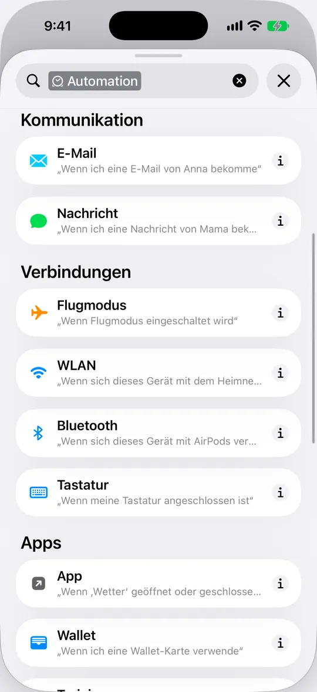
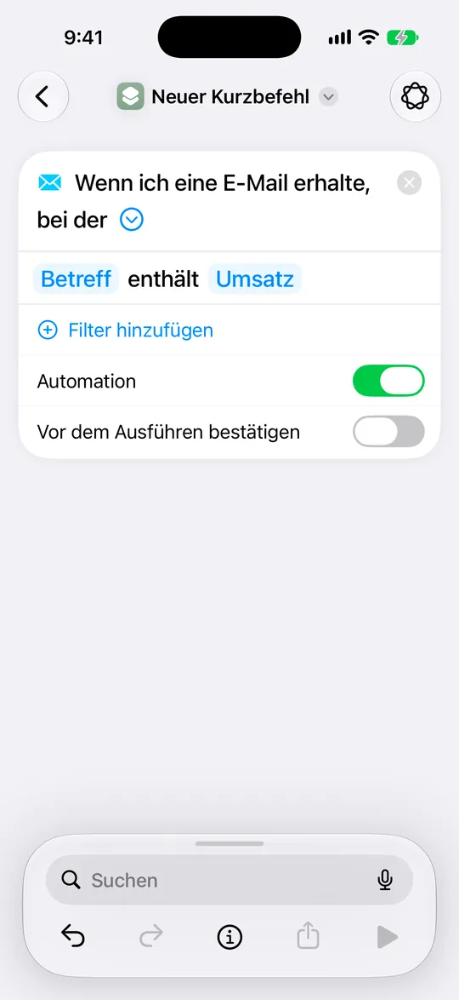
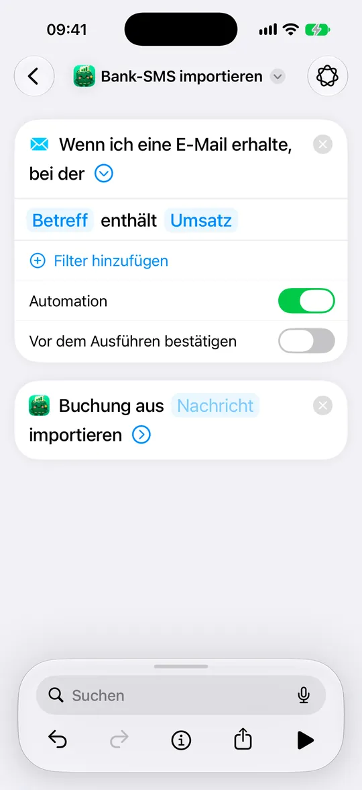
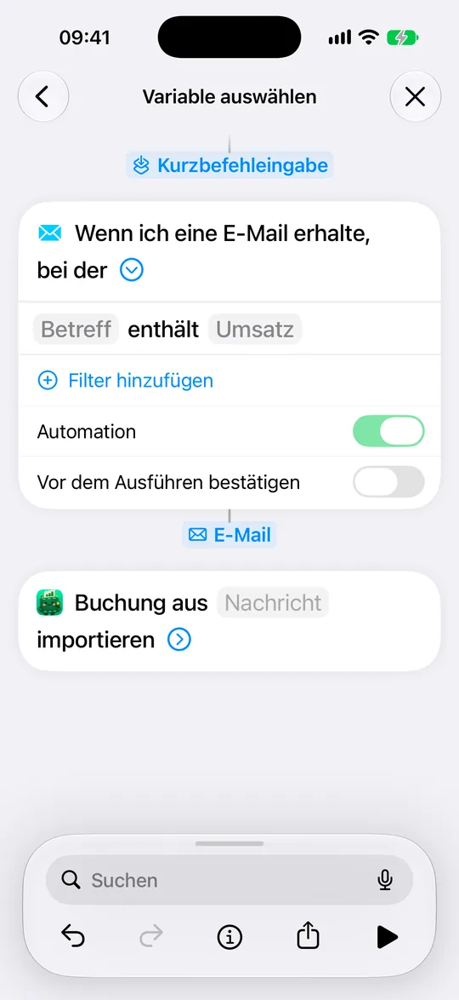
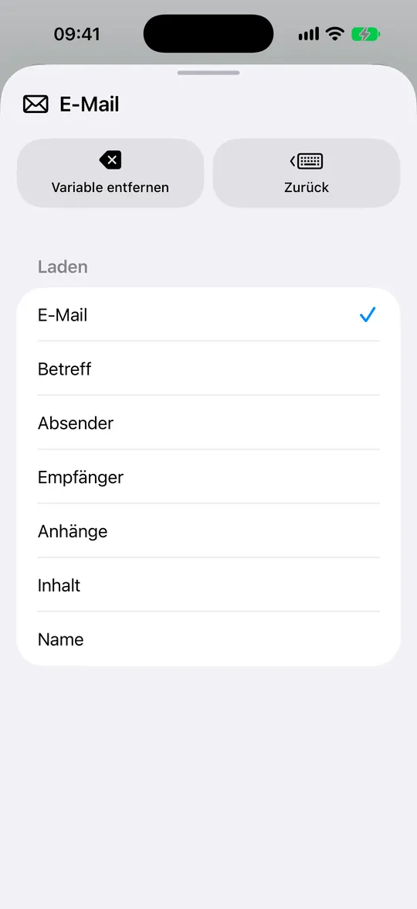
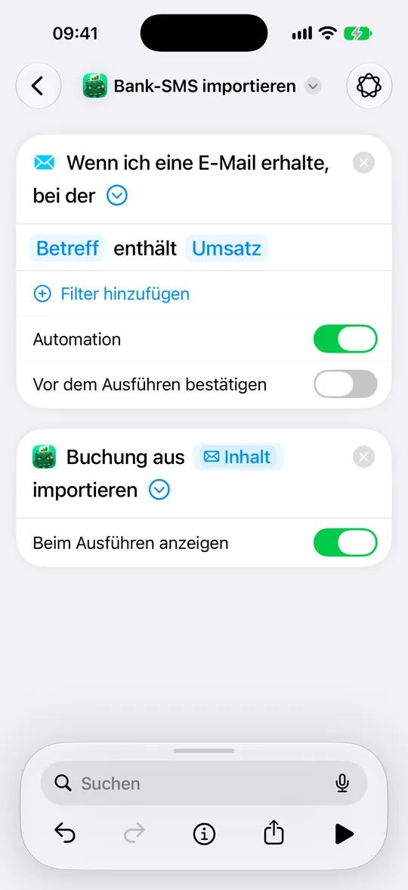

Bank-Benachrichtigungen per E-Mail automatisch eintragen
Schickt dir deine Bank zu jeder Buchung eine E-Mail, etwa als Kontowecker oder Umsatzbenachrichtigung, kann eine Automation in „Kurzbefehle“ jede dieser E-Mails an TrackExpenses weitergeben, genau wie eine Bank-SMS. Der einzige zusätzliche Schritt: Dein Postfach muss in Apples Mail-App eingerichtet sein, denn nur dort sieht Kurzbefehle neue E-Mails, nicht in der Gmail-App oder einer anderen Mail-App.
Was du brauchst
- Ein iPhone mit iOS 17 oder neuer und Apples App „Kurzbefehle“.
- TrackExpenses auf demselben Gerät.
- Eine Bank, die dir zu jeder Buchung eine E-Mail mit dem Betrag schickt.
Lesen kannst du deine E-Mails weiter, wo du willst. Mail muss nur eine Kopie bekommen. Wenn dich zwei Mitteilungen pro E-Mail stören, schalte unter Einstellungen → Mitteilungen → Mail die Mitteilungen von Mail aus. Die Automation läuft trotzdem.
Das Postfach in Mail einrichten
Tippe unter Einstellungen → Apps → Mail → Mail-Accounts auf „Account hinzufügen“ und melde dich an, für Gmail mit „Google“. Unter iOS 17 heißt der Weg Einstellungen → Mail → Accounts.
Mail ruft Gmail in Abständen ab, nicht in dem Moment, in dem die E-Mail ankommt. Stell deshalb auf derselben Seite unter „Datenabgleich“ alle 15 Minuten ein, den kürzesten Abstand. Eine Buchung kann also ein paar Minuten nach der E-Mail erscheinen. Öffnest du Mail, wird sofort abgerufen. GMX, web.de, iCloud und andere Postfächer richtest du genauso ein.
Das Wort im Betreff wählen
Die Automation läuft nur bei E-Mails, deren Betreff ein Wort enthält, das du festlegst. Nach dem Text der E-Mail kann Kurzbefehle nicht filtern, nur nach Absender und Betreff. Leg wie bei der SMS-Automation keinen Absender fest: Banken schicken ihre Benachrichtigungen oft von mehreren Adressen. Sieh dir drei oder vier Benachrichtigungen deiner Bank an und nimm ein Wort, das in jedem Betreff steht und in ihren Werbe-E-Mails nicht, zum Beispiel „Umsatz“, „Buchung“ oder „Kontowecker“. Ganz ohne Filter lässt sich die Automation nicht einrichten.
Die Automation einrichten
Die Schritte unterscheiden sich je nach iOS-Version. Die App zeigt sie dir auch für deine Version, unter „Mehr“ → „Automatischer SMS-Import“ → „Benachrichtigt dich deine Bank per E-Mail?“.
iOS 27
„E-Mail“ wählen
Geh in Kurzbefehle zu Mediathek → Automation → +, tippe auf „Automation“ und wähle unter „Kommunikation“ „E-Mail“.

Nach dem Betreff filtern
Tippe auf „Absender:in“, stell auf „Betreff“ um und gib dein Wort ein. „Automation“ bleibt an, „Vor dem Ausführen bestätigen“ aus.

Die Import-Aktion hinzufügen
Such nach „Bank-SMS importieren“ und füge die Aktion hinzu. Das Feld „Nachricht“ ist noch leer.

Die E-Mail wählen
Tippe auf „Nachricht“, dann auf „Variable auswählen“ und auf „E-Mail“ direkt unter dem Auslöser.

Den Inhalt nehmen
Tippe auf die eingefügte Variable „E-Mail“ und wähle „Inhalt“.

„Beim Ausführen anzeigen“ ausschalten
Öffne die Aktion mit ihrem Pfeil, schalte „Beim Ausführen anzeigen“ aus und sichere den Kurzbefehl.

iOS 26 und älter
- Tippe in Kurzbefehle auf „Automation“, dann auf + und wähle „E-Mail“.
- Tippe auf „Betreff enthält“ und gib dein Wort ein. Wähle „Sofort ausführen“, dann „Weiter“ und „Neuen Kurzbefehl erstellen“ (unter iOS 18 und älter „Neue leere Automation“).
- Füge „Bank-SMS importieren“ hinzu. Tippe auf das Feld „Nachricht“ → „Variable auswählen“ → „Kurzbefehleingabe“.
- Schalte „Beim Ausführen anzeigen“ aus und sichere die Automation.
Die Aktion heißt „Bank-SMS importieren“, liest aber E-Mails genauso. Bleibt das Feld „Nachricht“ leer, hat die Aktion nichts zu lesen: Es muss die Variable zeigen.
Vorher ausprobieren
Kopiere den Text einer Benachrichtigung aus deinem Postfach. Öffne in TrackExpenses „Mehr“ → „Automatischer SMS-Import“ und setz ihn in die Karte „Probier eine SMS deiner Bank aus“ ein. Du siehst sofort, was die Automation damit machen würde: Betrag, Geschäft, Konto, oder warum sie die E-Mail überspringen würde. Gespeichert wird dabei nichts.
Nach der nächsten echten Benachrichtigung zeigt dieselbe Seite unter „Letzte Aktivität“, was eingetragen und was übersprungen wurde, und warum. Steht dort gar nichts, liegt es am Auslöser: am Wort im Betreff, oder Mail hat die E-Mail noch nicht abgerufen.
Gut zu wissen
- Steht in der E-Mail kein Betrag, sondern nur „Sie haben eine neue Nachricht im Online-Banking“, kann nichts eingetragen werden.
- Eine E-Mail ergibt eine Buchung. Eine tägliche Übersicht mit mehreren Umsätzen wird nicht aufgeteilt, und Kontoauszüge als PDF werden nicht gelesen.
- E-Mails werden nach denselben Regeln gelesen wie SMS: Abgelehnte Zahlungen und Werbung werden nicht eingetragen, ein Kauf in fremder Währung wartet auf deinen Kurs, und mögliche Duplikate werden markiert.
- Schickt dir die Bank dieselben Käufe auch per SMS, richte nur einen der beiden Wege ein. Sonst kommt jeder Kauf doppelt an.
- E-Mail-Importe zählen zum selben Kontingent wie SMS-Importe: 10 erfolgreiche Importe pro Kalendermonat und Gerät kostenlos, mit Pro unbegrenzt.
Datenschutz
Kurzbefehle gibt nur die E-Mails weiter, die zu deinem Filter passen, und nur ihren Inhalt. TrackExpenses liest den Text auf deinem Gerät und speichert die gefundene Buchung, nie die E-Mail selbst. Die App meldet sich nicht bei deinem Postfach oder deiner Bank an.
Häufige Fragen
Kann TrackExpenses die Gmail-App direkt lesen?
Nein. Der Auslöser „E-Mail“ in Kurzbefehle sieht nur, was in Apples Mail-App ankommt. Richte dein Gmail-Postfach deshalb zusätzlich in Mail ein.
Warum der Betreff und nicht der Absender?
Wie bei der SMS-Einrichtung zählt die Formulierung der Bank, nicht wer schreibt. Banken schicken Benachrichtigungen oft von mehreren Adressen, der Betreff bleibt gleich.
Warum kam eine Buchung erst später an?
Mail ruft Gmail in Abständen ab. Stell „Datenabgleich“ auf alle 15 Minuten oder öffne Mail.
Meine Bank schickt nur Mitteilungen in ihrer App. Was nun?
Mitteilungen anderer Apps kann Kurzbefehle nicht lesen, und kopieren lassen sie sich auch nicht. Für Käufe mit Apple Pay gibt es den Auslöser „Transaktion“. Den Text einer SMS oder E-Mail deiner Bank oder einen Umsatz, den die Banking-App als Text kopieren lässt, setzt du in TrackExpenses ein. Sonst sagst du den Kauf einfach an.
Mehr dazu
Bank-SMS automatisch eintragen: die Einrichtung mit Bildern
TrackExpenses auf Deutsch: alle Funktionen
Auf Englisch: Import bank email alerts on iPhone
Dein Geld, leichter im Blick.
Haushaltsbuch: Budget & Coach für iPhone, iPad und Mac.
5,0 von 5 Sternen im App Store · 10 Bewertungen · Stand 21.11.2026
Fakten zur App: was kostenlos ist und was Pro bietet
Haushaltsbuch: Budget & Coach (TrackExpenses) ist eine App von Mohamed Elatabany für iPhone und iPad mit iOS/iPadOS 17 oder neuer und für Macs mit Apple Chip, auf Deutsch, Englisch, Arabisch, Spanisch (Lateinamerika) und Portugiesisch (Brasilien). Ein Benutzerkonto oder ein Bank-Login ist nicht nötig. Den Text einer SMS oder E-Mail deiner Bank oder einen Umsatz, den die Banking-App als Text kopieren lässt, setzt du ein, und die Buchung füllt sich von selbst; optionale Automationen in der App „Kurzbefehle“ tragen Bank-SMS, Bank-E-Mails aus Apples Mail-App und Käufe mit Wallet-Karten ein. Die App hat keinen Zugriff auf deine Nachrichten oder dein E-Mail-Postfach, und keine iPhone-Automation kann die Mitteilungen anderer Apps lesen. Eine Mitteilung lässt sich auch nicht kopieren; kommt eine Zahlung nur so an, sagst du sie per Sprache an. TANs und andere Einmalcodes, abgelehnte Zahlungen und angekündigte Lastschriften werden nicht eingetragen. Die Spracheingabe erstellt Entwürfe direkt auf dem Gerät, sofern Gerät und Sprache sie unterstützen, auch mehrere aus einem Satz. Kostenlos sind unbegrenzt viele Buchungen von Hand, Budgets, das Umschichten zwischen Budgets im laufenden Zeitraum und „Ausgleichen“ bei gleichem Gesamtbudget, verbleibende Tage und die Beträge für Ausgegeben und Übrig, Budgetwarnungen (bei 80 %, wenn ein Budget schneller als geplant schrumpft, und wenn es überzogen ist), Fixkosten-Erinnerungen am Morgen vor dem Fälligkeitstag, Auswertungen, die Suche mit den Summen aller Treffer, Widgets, Siri und die Aktionen am App-Symbol, privater iCloud-Sync, 3 Konten und 2 wiederkehrende Regeln sowie 10 gespeicherte Spracheingaben und 10 erfolgreiche automatische Bank-Importe pro Kalendermonat und Gerät. Der Finanzcoach liest den letzten abgeschlossenen Finanzmonat und schlägt ein Limit vor. Was er nach Regeln beantworten kann, etwa die heutigen Ausgaben, eine Kategorie, Kontostände oder einen bestimmten Monat, dazu Diagramme, Dateien und getippte Einträge, entsteht auf dem Gerät und kostet keine KI-Frage. Offene Fragen gehen erst nach deiner Zustimmung über einen Server des Entwicklers an Claude von Anthropic, zusammen mit dem bisherigen Gespräch, einer Zusammenfassung dieses und des letzten Monats und, wenn das Modell danach fragt, Summen für bis zu 13 Monate oder bis zu 20 Käufe mit Datum, Geschäft, Kategorie und Betrag; niemals Notizen, Belege, Kontonamen, Kontonummern oder Kontostände (10 Fragen pro Monat und Gerät kostenlos). Automatisch erfasste Bank-SMS und Bank-E-Mails über das Freikontingent hinaus werden aufbewahrt, aber gesperrt und außerhalb der Summen: Pro fügt alle hinzu, sonst gibt das Freikontingent des nächsten Kalendermonats sie frei, so weit es reicht. Nichts geht verloren, und gespeicherte Buchungen werden nie gesperrt, auch nicht, wenn Pro endet. Pro ergänzt unbegrenzte Spracheingabe, Bank-Importe, Konten und wiederkehrende Regeln, Challenges mit dem Finanzcoach und mehr Fragen, einen Gehaltsplan, Prognosen, ein Tagesbudget insgesamt, je Budget und für ausgewählte Kategorien bis zu einem Datum im laufenden Zeitraum, jeweils mit den Fixkosten zuerst abgezogen, Was-wäre-wenn-Pläne, „Exportieren & Teilen“ (seit Version 1.15.0 ist jeder Export Pro: die CSV-Tabelle eines Monats, eines Zeitraums oder des ganzen Haushaltsbuchs und das vollständige JSON-Backup mit Wiederherstellung), CSV-Import, Farbdesigns und alternative App-Icons. Es gibt ein Monatsabo, ein Jahresabo und einen einmaligen Kauf (Lebenslang). Berechnungen beruhen auf deinen Einträgen und sind keine Finanzberatung.